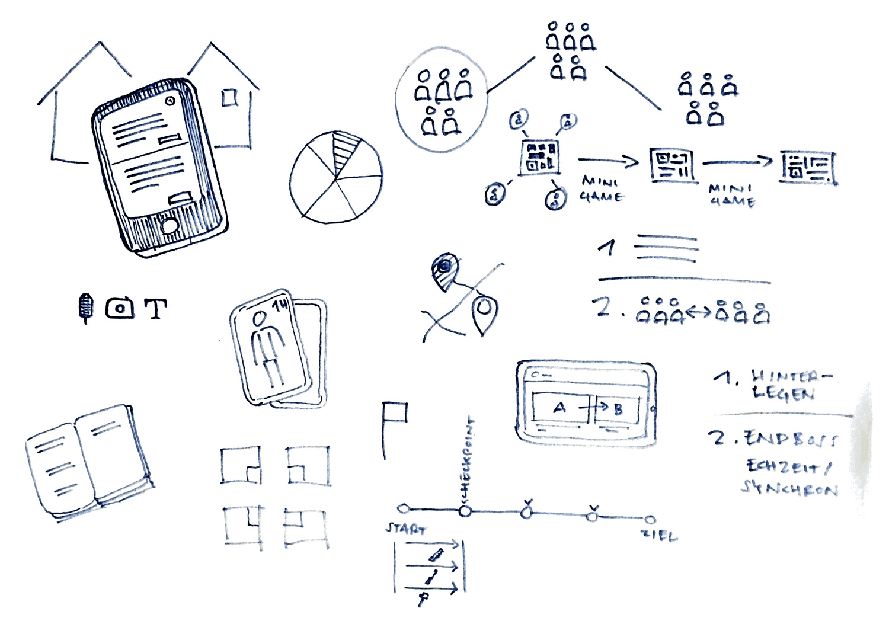
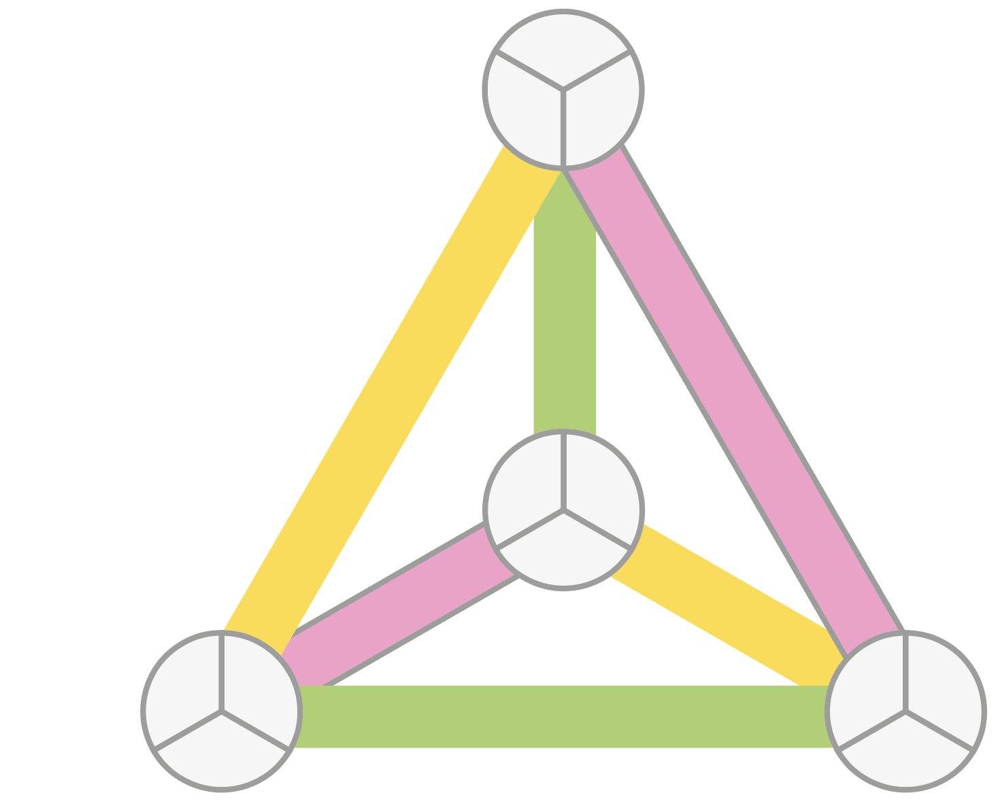
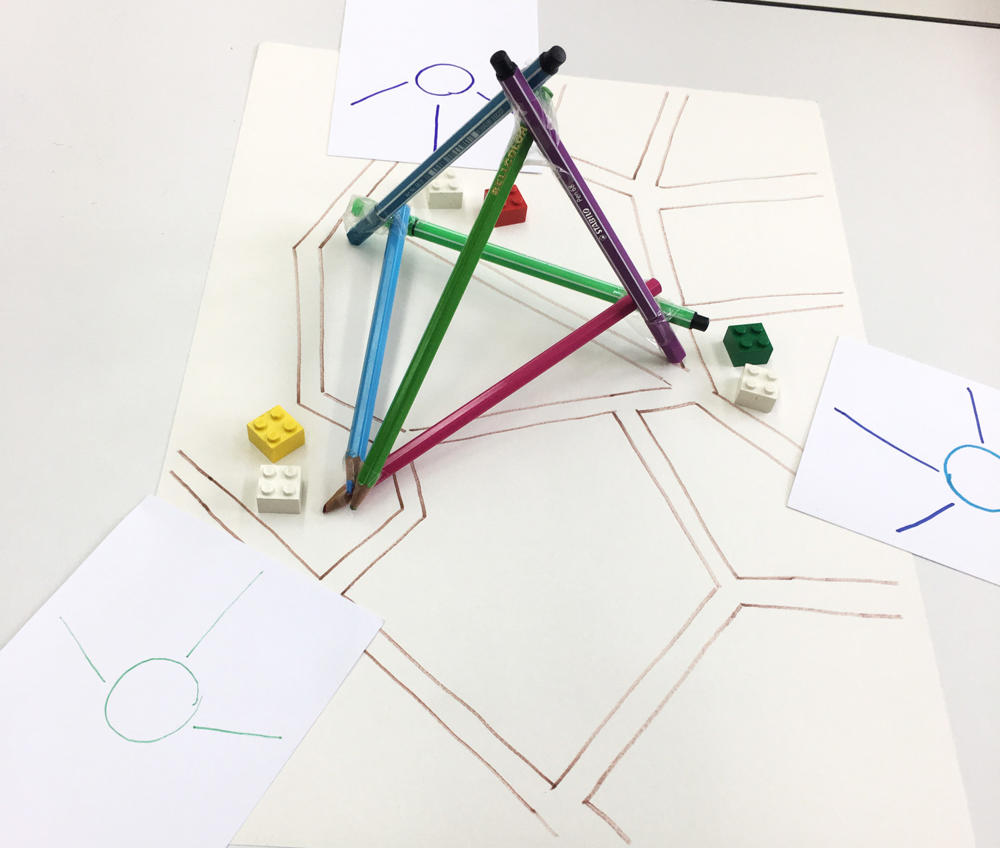
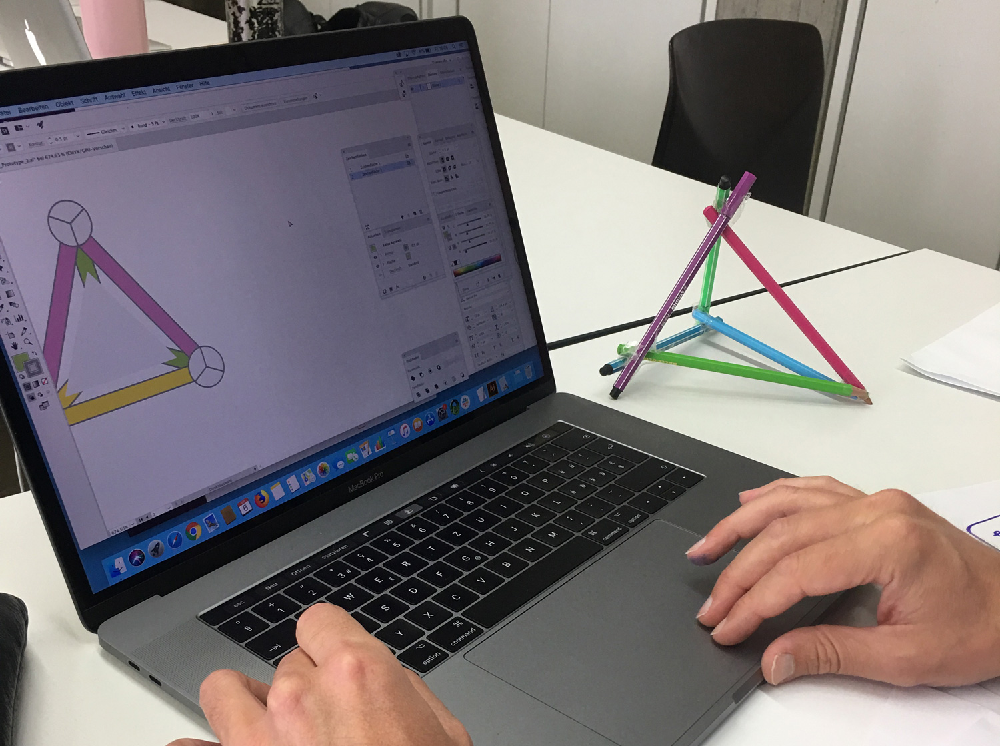
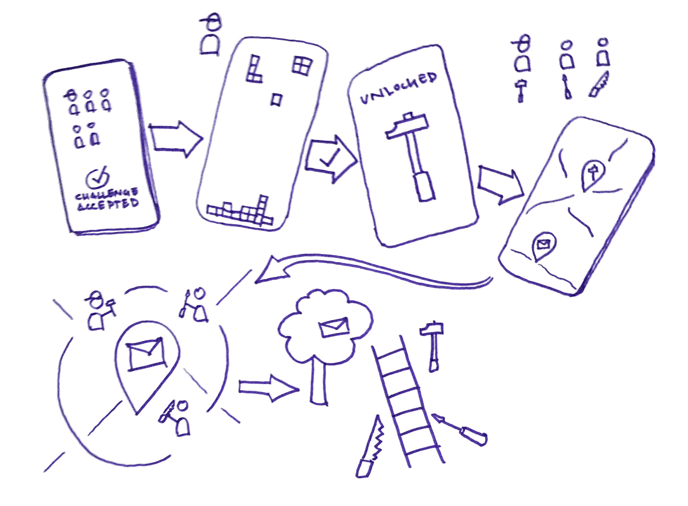
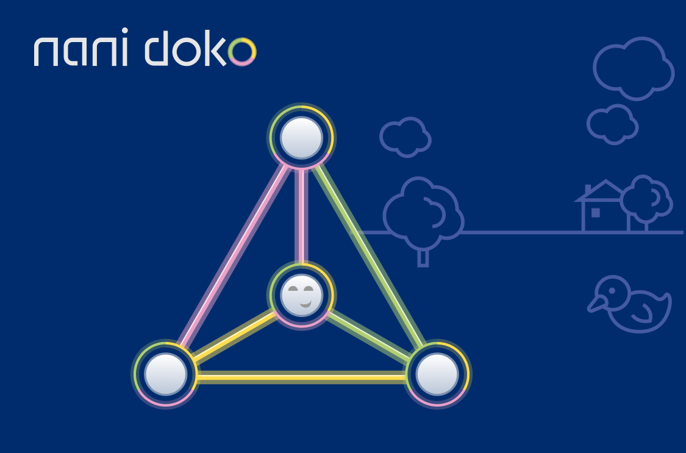
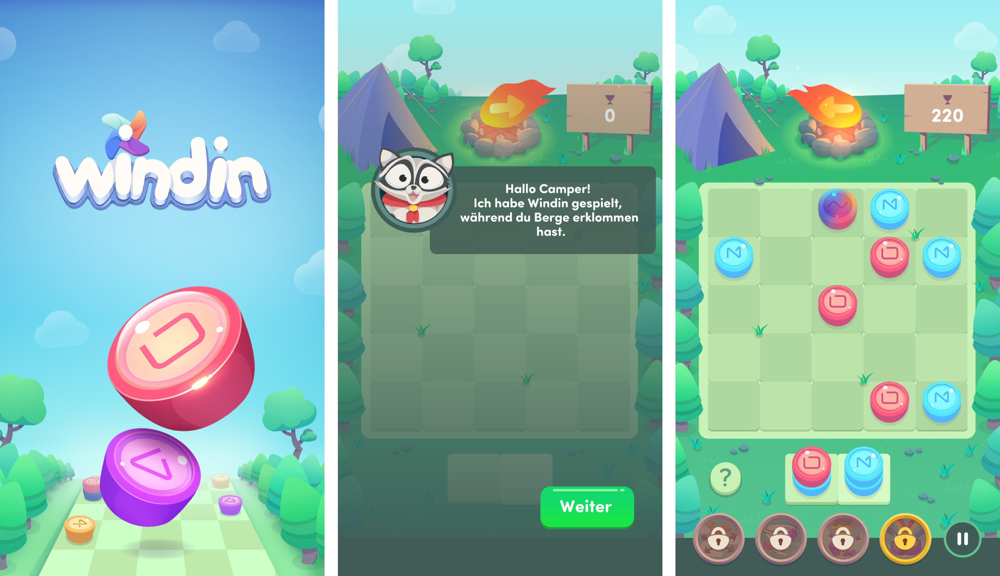
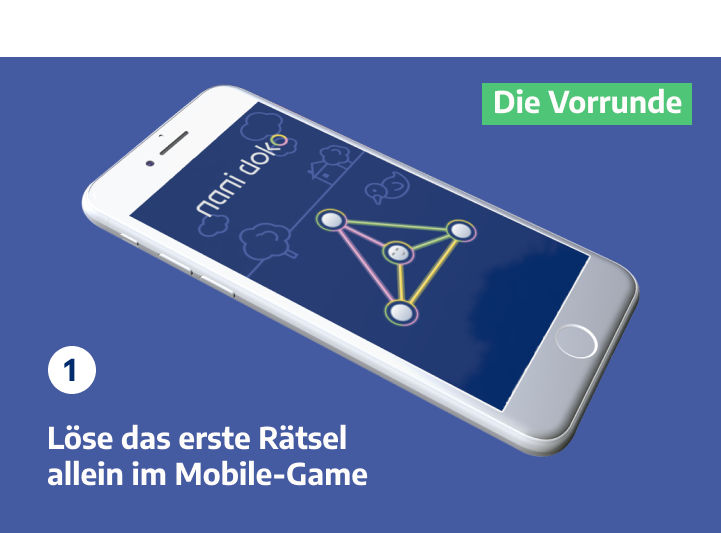
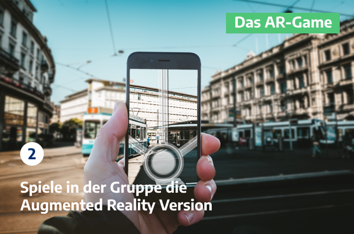

Knobelspiel Detailansicht
Projektdauer
August bis September 2019
Meine Rolle
Konzeption, UX-Design
Aufstellung
Gruppenarbeit Studium
Interaction Design
Ziel bei diesem Projekt war es eine spannende Gamemechanik zu finden und diese in ein digitales Spiel umzusetzen.
Ideenfindung
- Recherche Spielmechaniken: Geocaching (Schnitzeljagd, Pokemon Go (Augmented Reality), Mastermind und Sudoku (Knobelspiele)
- Wege finden verschiedene Spielmechaniken zu vereinen
- Spielfigur und Regeln definieren
- Konzept Testen (Wireframes ansehen)
- Prototyp

Skizzen unserer Ideen

Ansicht der gelösten nani doko Figur.

Funktioniert die Figur auch in 3D für Augmented Reality?

Testen des Spieles. Funktionieren die Regeln? Packt es einen mehr zu rätseln?

Wie ist der Ablauf des Spieles?
Unsere Idee
In unserem Denkspiel vereinen wir ein Einzelplayergame auf dem Smartphone mit einem Multiplayer Game im physischen Raum. Anreize für Spieler könnten Interesse für Denkaufgaben, das Lösen von Rätseln in einer Gruppe sowie das Erkunden des Spiels im Raum mit Augmented Reality sein. Der Spieler schlüpft dabei in die Rolle des «Problem-Lösers».
- Einzelplayer Game, Mikrochallenge, Erstes Level als “Übung” der Gamemechanik findet auf dem Smartphone statt
- Multiplayergame, Makrochallenge, Zweites Level wird im physischen Raum zusammen mit Augmented Reality und in der Gruppe gespielt
Die Herausforderung in nani doko liegt darin, einen Farbcode in möglichst wenig Spielzügen und Punkteverlust zu knacken. Es ist möglich Minuspunkte zu machen!
Design
- Grafiken zeigen verspielten Charakter
- Bedienelemente farblich hervorgehoben
- Der nani doko begleiten einen durchs Spiel
- Interaktionselemente wie Buttons im 3D-Look um die Affordanz zu verstärken
- Wording hält sich an bekannte Spiele wie Windin

Mood des nani doko Games

Windin diente als Vorlage für die Stimmung des Spieles
Übergang von Single Player Game am Handy zum Multiplayer Game draussen im Freien mit Augmented Reality.
Endprodukt
Unser Spiel in einem Satz:
Ein Logikrätsel à la Mastermind umgesetzt als Multiplayer Game im Physischen Raum.
Factsheet mit den wichtigsten Hintergrundinfos und der Spielidee. 
Klicke unten um die Spielregeln des 1. Teils zu öffnen 
Klicke auf das untere Bild um die Spielregeln des 2. Teils zu öffnen 